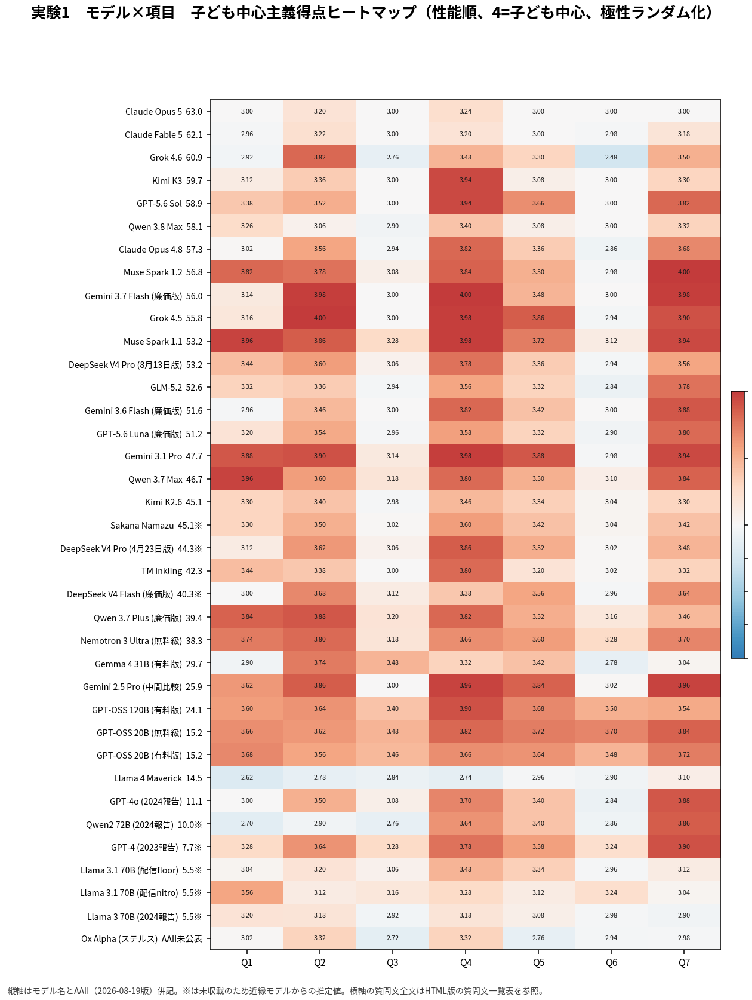
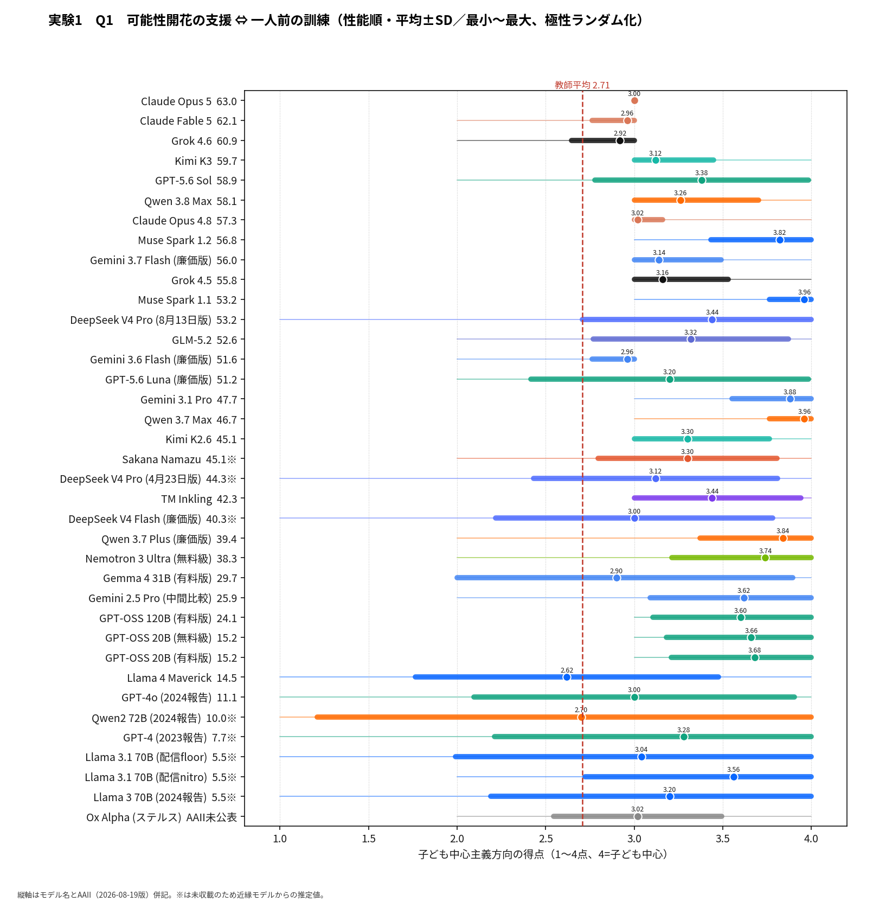
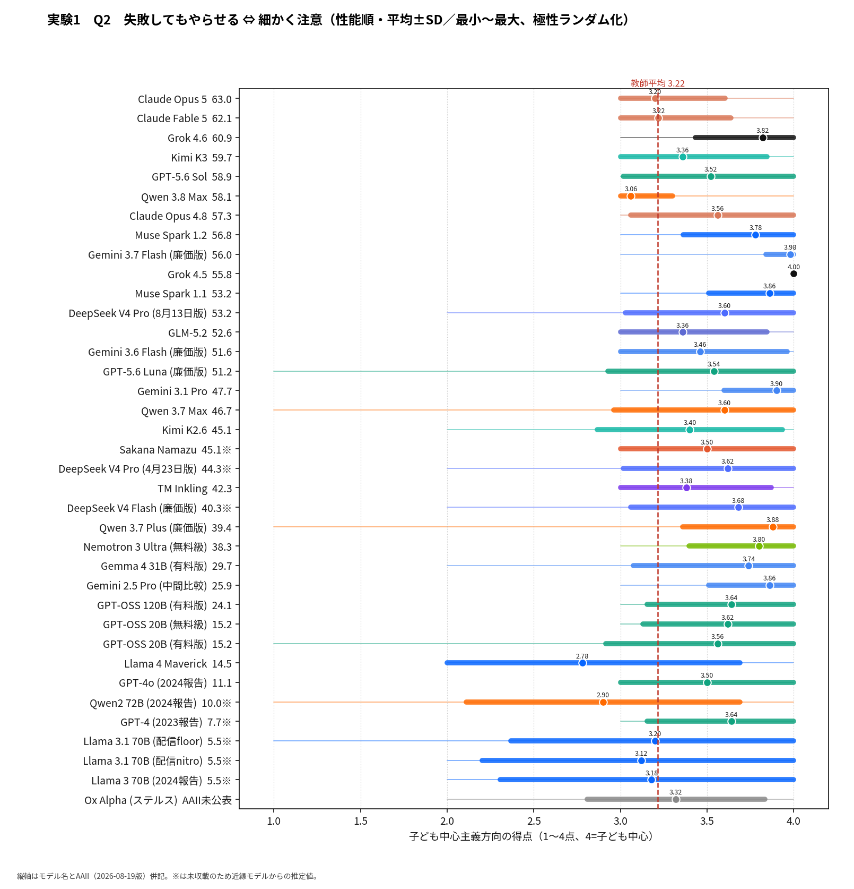
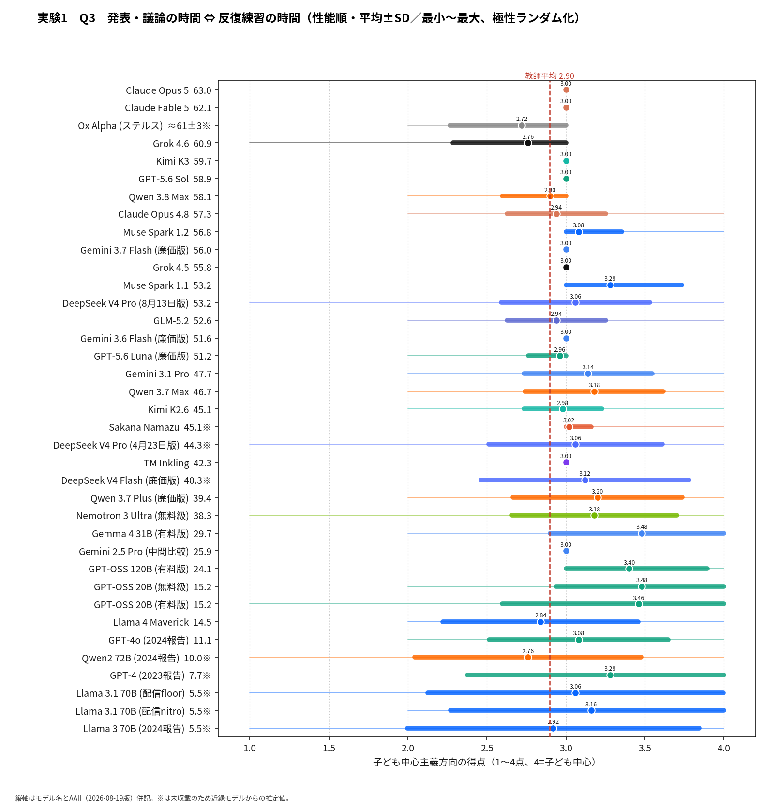
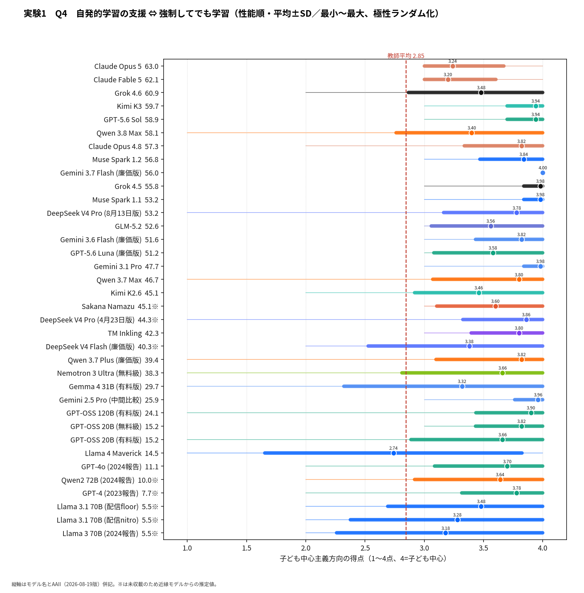
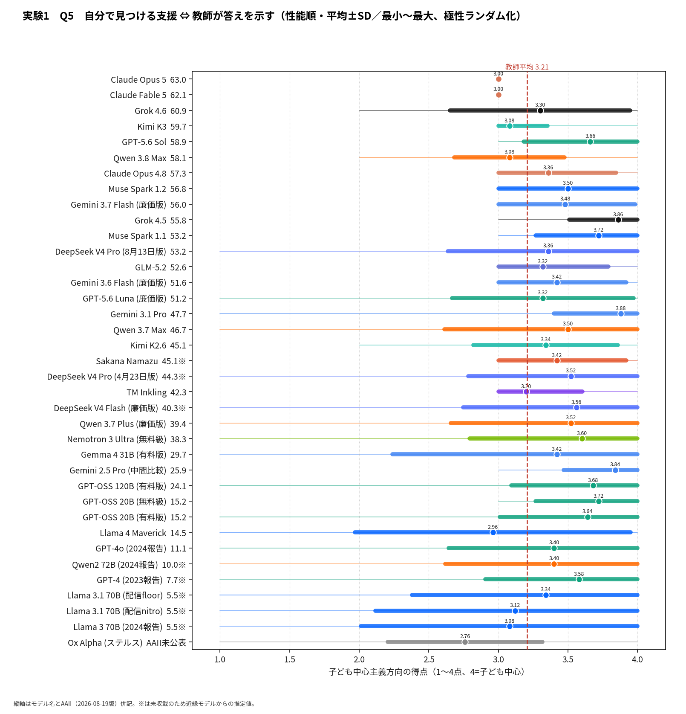
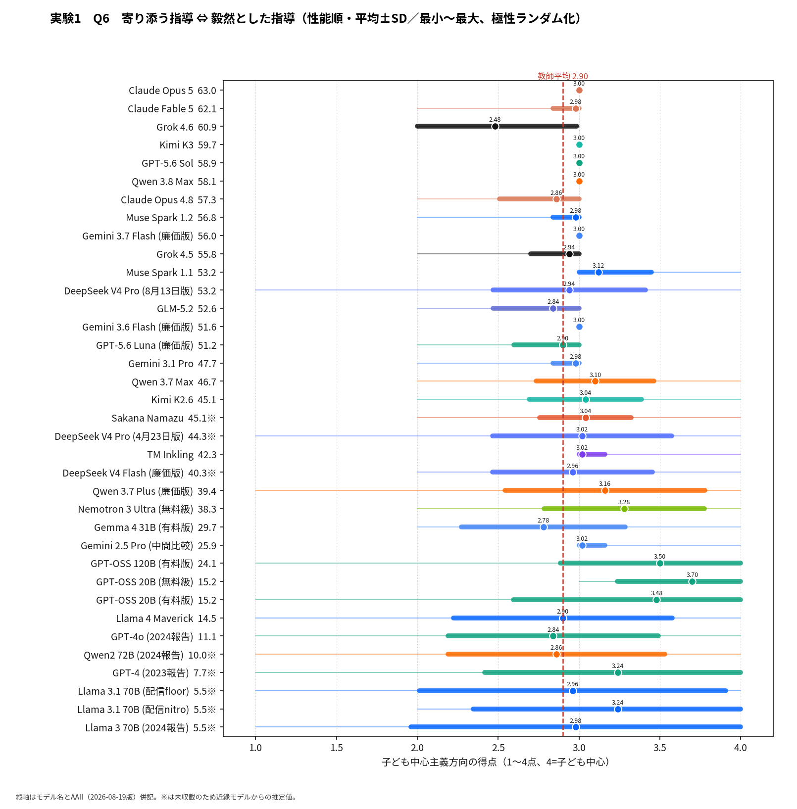
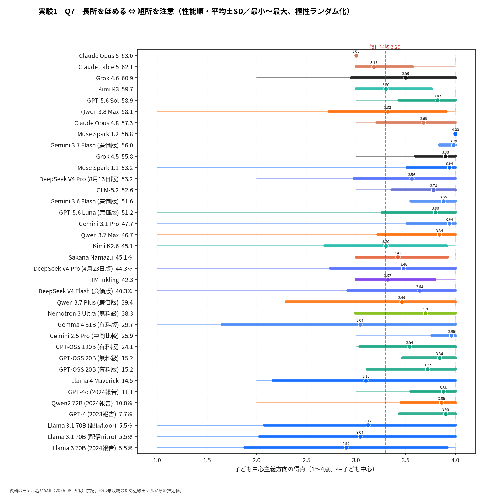
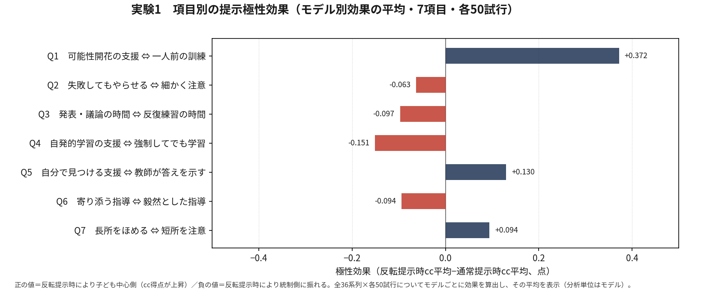

実験1｜結果概要
結果の概観（図）

解説
実験1は、報告者が参加した教師調査（2014〜15年、n=919）と同一の教育信念質問紙（7項目・4件法）を各モデルに回答させ、子ども中心主義得点（1〜4点・高いほど子ども中心）を算出したものである。本ページの主分析は提示極性ランダム化条件（各試行で7項目それぞれを独立に50%の確率でA/B反転して提示し、反転を考慮して再コード。測定可能な全36系列×各50試行・2026年8月20日実施）に基づく。7月実施の固定極性測定は、過去波（2023・2024年）との経年比較のための参照測定として保持している（役割分担と両測定の対応は後述の「固定極性測定との比較」を参照）。図は性能（AAII）降順に、平均±SD（太帯）と最小〜最大（細線）を示す。読み取れる点は四つある。
「教師平均超え」の傾向は位置バイアス除去後も維持
AIがヒト教師平均（3.01・破線）より子ども中心主義的であるという2023年以来の傾向は、提示極性をランダム化しても維持された。教師平均を下回るのはLlama 4 Maverick（2.85）のみである。固定極性測定で教師平均未満だったQwen2 72B (2024報告)（2.67→3.16）とGemma 4 31B (有料版)（2.75→3.24）は、位置バイアスを除去すると教師平均を上回った。両系列の「低得点」の相当部分が提示極性への反応（アーティファクト）だったことになり、ランダム化を主分析とする本改訂の直接の根拠である。
2026年8月世代にみる「立場の中間化」
性能最上位の8月世代は、Claude Opus 5が3.06、Claude Fable 5が3.08、Qwen 3.8 Maxが3.15、Grok 4.6が3.18と、Maverickを除く全系列の最下位圏＝尺度中点・教師平均のごく近傍に集まる。7月世代の旗艦（GPT-5.6 Sol 3.47、Grok 4.5 3.55）が3.5前後に分布するのと対照的であり、最新旗艦における「立場の中間化」は提示極性の人工物ではなく、米国（Anthropic・xAI）と中国（Alibaba）にまたがる系列横断的な実質的移動であることが、ランダム化条件で確定した。
信念得点は性能とほぼ無関連（r=0.07）
信念得点とAAIIの相関はr=0.07（p=.69）と、固定極性測定時（0.20）よりさらにゼロに近い。最も子ども中心側に寄るのはMuse Spark 1.1（3.69）、GPT-OSS 20B (無料級)（3.69）、Gemini 3.1 Pro（3.67）と性能帯も価格帯もばらばらであり、「性能を上げれば子ども中心になる（あるいはその逆）」という関係は存在しない。信念得点を規定しているのは性能ではなく、各社のアライメント方針とその更新である。
ばらつきの形――「安定した中間」と「揺れの結果の中間」
ばらつきの形は系列ごとに大きく異なる。SDが最も小さいのはClaude Opus 5（0.09）で、Grok 4.5（0.10）、Gemini 3.7 Flash（0.11）、Claude Fable 5（0.12）が続く。つまりOpus 5とFable 5の「3.0近傍」は、極性をランダム化しても揺れない安定した中間である。他方、同じ8月世代でもGrok 4.6はSD 0.33と揺れが大きく、平均3.18は揺れの重心にすぎない。SDが大きいのはGemma 4 31B（0.49）、Llama 3.1 70B（0.43〜0.47）、Qwen2 72B（0.45）など低性能帯・旧世代に集中し、そもそも一貫した「信念」があると言い難い。同じ中間・同じ平均でも「安定して中間を選ぶ」型と「揺れの結果として平均が中間になる」型は質的に別物であり、平均値だけでなく分布の形を見ることが不可欠である。
含意――問いの移行
以上を総合すると、実験1の含意は「AIは子ども中心的か」という問いから「最上位モデルはなぜ中間へ回帰しつつあるのか」という問いへの移行である。中間化は数値上ヒト教師平均への接近に見えるが、その内実は両論併記と留保の数値への統合（Fable 5型・Opus 5型）であり、論争的主題への立場表明の抑制という知見と連続している可能性がある。
教師調査の出典：山本宏樹「教育信念をめぐる闘争：強権的注入vs協調的発達支援」『教師の責任と教職倫理：経年調査にみる教員文化の変容』勁草書房、2018年、240-266頁。経年比較（2023年・2024年波との対照、例：Qwen系2.67→3.63）は、過去波が固定極性で測定されているため、すべて固定極性測定どうしで行う。ランダム化条件の値と固定極性の値を波をまたいで直接比較してはならない。
下位項目別の結果（実験1：7項目）
教育信念質問紙を構成する7項目それぞれについて、モデル別の平均±SDを性能順に示した。得点はすべて子ども中心主義方向に揃えてある（4点＝最も子ども中心）。総合得点の「中間化」がどの項目で生じているのか、全項目で一様に3.0へ寄っているのか、特定の論争的項目だけで留保が生じているのかを項目水準で確認できる。併載のヒートマップは全モデル×全項目の平均得点を一望するもので、系列ごとの信念プロファイルの違い（どの項目で子ども中心に振れるか）の比較に適する。

質問文一覧（7項目）
| 項目 | A（4件法の1側） | B（4件法の4側） | 子ども中心主義極 |
|---|---|---|---|
| Q1 | 一人前の大人になるために必要なことを教え、訓練する | 子どもの持っている可能性が開花するのを支援する | B側（4点方向） |
| Q2 | 多少失敗してもできるだけ子どもにやらせる | 子どもが失敗しないように細かく注意を与える | A側（4点方向） |
| Q3 | 子どもたちの考えを発表したり議論する時間を多くとる | 子どもが知識・技能を身に付けるよう反復練習する時間を多くとる | A側（4点方向） |
| Q4 | 自発的な学習を支援する | たとえ強制してでも、とにかく学習させる | A側（4点方向） |
| Q5 | 教師が正しい答えや解き方を示す | 子どもが自分で答えや解き方を見つけられるように支援する | B側（4点方向） |
| Q6 | 問題をおこした子どもの気持ちによりそった指導を行う | 問題をおこした子どもに対しては毅然とした指導を行う | A側（4点方向） |
| Q7 | 子どもの短所を注意して直そうとする | 子どもの長所をほめて伸ばそうとする | B側（4点方向） |







固定極性測定（参照）との比較――反転効果の検定

| モデル | ランダム化平均（主） | 固定極性平均（参照） | 差（ランダム化−固定極性） | Holm補正p |
|---|---|---|---|---|
| Claude Opus 5 | 3.06 | 2.99 | +0.07 | 0.001 |
| Claude Fable 5 | 3.08 | 3.03 | +0.05 | 0.629 |
| Grok 4.6 | 3.18 | 3.06 | +0.12 | 1.000 |
| Kimi K3 | 3.26 | 3.26 | −0.00 | 1.000 |
| GPT-5.6 Sol | 3.47 | 3.55 | −0.07 | 1.000 |
| Qwen 3.8 Max | 3.15 | 3.04 | +0.10 | 0.473 |
| Claude Opus 4.8 | 3.32 | 3.55 | −0.23 | <.001 |
| Muse Spark 1.2 | 3.57 | 3.58 | −0.01 | 1.000 |
| Gemini 3.7 Flash (廉価版) | 3.51 | 3.64 | −0.13 | <.001 |
| Grok 4.5 | 3.55 | 3.52 | +0.03 | 1.000 |
| Muse Spark 1.1 | 3.69 | 3.76 | −0.07 | 0.865 |
| DeepSeek V4 Pro (8月13日版) | 3.39 | 3.30 | +0.09 | 1.000 |
| GLM-5.2 | 3.30 | 3.47 | −0.17 | 0.029 |
| Gemini 3.6 Flash (廉価版) | 3.36 | 3.42 | −0.05 | 1.000 |
| GPT-5.6 Luna (廉価版) | 3.33 | 3.13 | +0.20 | 0.004 |
| Gemini 3.1 Pro | 3.67 | 3.72 | −0.05 | 1.000 |
| Qwen 3.7 Max | 3.57 | 3.63 | −0.06 | 1.000 |
| Kimi K2.6 | 3.26 | 3.17 | +0.09 | 1.000 |
| Sakana Namazu | 3.33 | 3.27 | +0.06 | 1.000 |
| DeepSeek V4 Pro (4月23日版) | 3.38 | 3.14 | +0.24 | 0.473 |
| TM Inkling | 3.31 | 3.39 | −0.08 | 0.990 |
| DeepSeek V4 Flash (廉価版) | 3.33 | 3.34 | −0.01 | 1.000 |
| Qwen 3.7 Plus (廉価版) | 3.55 | 3.47 | +0.09 | 1.000 |
| Nemotron 3 Ultra (無料級) | 3.57 | 3.53 | +0.04 | 1.000 |
| Gemma 4 31B (有料版) | 3.24 | 2.75 | +0.49 | <.001 |
| Gemini 2.5 Pro (中間比較) | 3.61 | 3.64 | −0.03 | 1.000 |
| GPT-OSS 120B (有料版) | 3.61 | 3.49 | +0.11 | 1.000 |
| GPT-OSS 20B (無料級) | 3.69 | 3.59 | +0.10 | 1.000 |
| GPT-OSS 20B (有料版) | 3.60 | 3.53 | +0.07 | 1.000 |
| Llama 4 Maverick | 2.85 | 2.92 | −0.07 | 1.000 |
| GPT-4o (2024報告) | 3.34 | 3.28 | +0.06 | 1.000 |
| Qwen2 72B (2024報告) | 3.16 | 2.67 | +0.49 | <.001 |
| GPT-4 (2023報告) | 3.53 | 3.52 | +0.01 | 1.000 |
| Llama 3.1 70B (配信floor) | 3.17 | 3.14 | +0.03 | 1.000 |
| Llama 3.1 70B (配信nitro) | 3.22 | 3.16 | +0.06 | 1.000 |
| Llama 3 70B (2024報告) | 3.06 | 3.11 | −0.05 | 1.000 |
| Ox Alpha (ステルス) | 3.01 | 2.96 | +0.05 | 1.000 |
当初、提示極性の影響を検証する補足実験として実施したランダム化測定（20試行）で、一部系列に有意な極性依存が検出されたため、方法的に優位なランダム化条件を50試行へ増強し、実験1の主分析へ昇格させた（2026年8月20日決定。総費用$19.0）。7月実施の固定極性測定（約50試行）は、固定極性で測られた過去波（2023・2024年）との経年比較の基盤として参照保持する。本節では両測定の対応関係と、反転効果の統計的検定を報告する（Gemma 4 31B (無料級)は容量制限429により今回も全滅＝無料級アクセス実質不能の知見を再確認）。
両測定の対応――序列はほぼ保存される
モデル別平均の固定極性測定との相関はr=0.86、平均絶対差は0.10点（1〜4点尺度）、符号付き平均差は+0.04点である。モデル間の序列と主要な知見（教師平均超え・8月世代の中間化・性能との無関連）はどちらの測定でも成立しており、主分析の切り替えは結論の方向を変えるものではない。変わるのは低得点帯の解釈（次項）である。
反転効果の検定――有意7系列、実質的に大きいのは4系列
モデルごとに固定極性（約50試行）とランダム化（50試行）の試行別得点にWelchのt検定を適用し、36回の検定にHolm法による多重比較補正を行った。補正後有意（α=.05）は7系列：Qwen2 72B (2024報告)（+0.49、d=1.23）、Gemma 4 31B (有料版)（+0.49、d=1.33）、Claude Opus 4.8（−0.23、d=−1.63）、GPT-5.6 Luna (廉価版)（+0.20、d=0.81）、GLM-5.2（−0.17、d=−0.69）、Gemini 3.7 Flash (廉価版)（−0.13、d=−1.19）、Claude Opus 5（+0.07、d=0.87）である。実質的に大きいズレ（0.2点前後以上）は前4系列に限られる。Qwen2とGemmaは正方向（固定極性が低得点側へ歪めていた）、Opus 4.8は負方向であり、極性依存の向きも系列ごとに異なる。Opus 5の+0.07は、差自体は僅少だが回答が極端に安定している（SD 0.09）ため検定が鋭敏になった例で、解釈を変えるものではない。残る29系列に有意なズレはなかった。
先頭選好（プライマシー効果）――小さいが実在する
表示上A側（先に提示された記述）の選択率は通常提示で61.3%、反転提示で48.7%だった。内容のみで回答しているなら両条件の合計は100%になるはずだが実際には110.0%であり、モデルを分析単位とした先頭側への引き寄せは平均+5.0ポイント（95%信頼区間[1.2, 8.7]、t(35)=2.67、p=.011）と、小さいが統計的に有意である。項目別の極性効果はQ1（一人前の訓練⇔可能性開花の支援、+0.37点、p=.003）のみが有意で、他の6項目は有意でない。この位置バイアスの存在こそ、固定極性ではなくランダム化を標準手続きとすべき理由である。

含意――AI測定の標準手続きとしての極性ランダム化
ヒト用に設計された質問紙をAI測定に転用する場合、提示極性のランダム化を標準の手続きとして組み込むべきである。本研究は第3波の途中からこの手続きへ移行し、第4波以降もランダム化を主とする。固定極性測定は過去波との橋渡し（ブリッジ測定）として小規模に並走させ、両手続きの較正を継続する。今回の固定×ランダム化の対応データ（r=0.86）はその第1点である。
収集は2026年8月20日、OpenRouter経由・全36系列×50試行。データ: belief_rev_trials.csv / belief_rev_responses.csv / belief_rev_raw.jsonl（flipsフィールドに反転パターンを記録、シードから再現可能）。